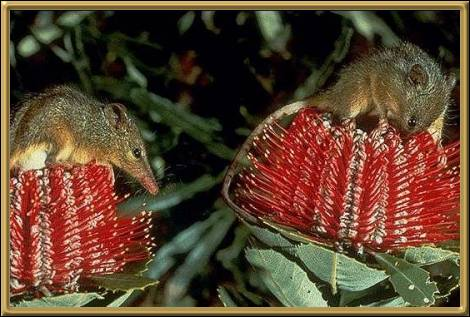

This little creature feeds only on nectar and pollen, which restricts its habitat somewhat. They're found only in the south western regions of Western Australia and their body size is only 6-8cm (2-3 inches). The aboriginal name for Honey Possum is the noolbenger. They live in pairs or small groups.
Photographer: R L Smith